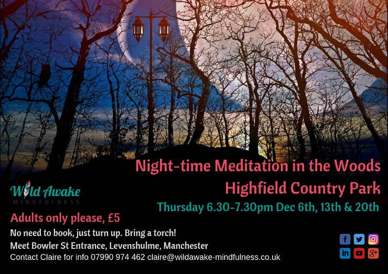
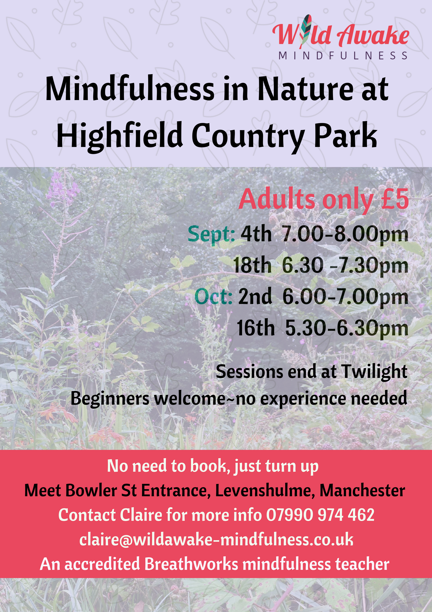
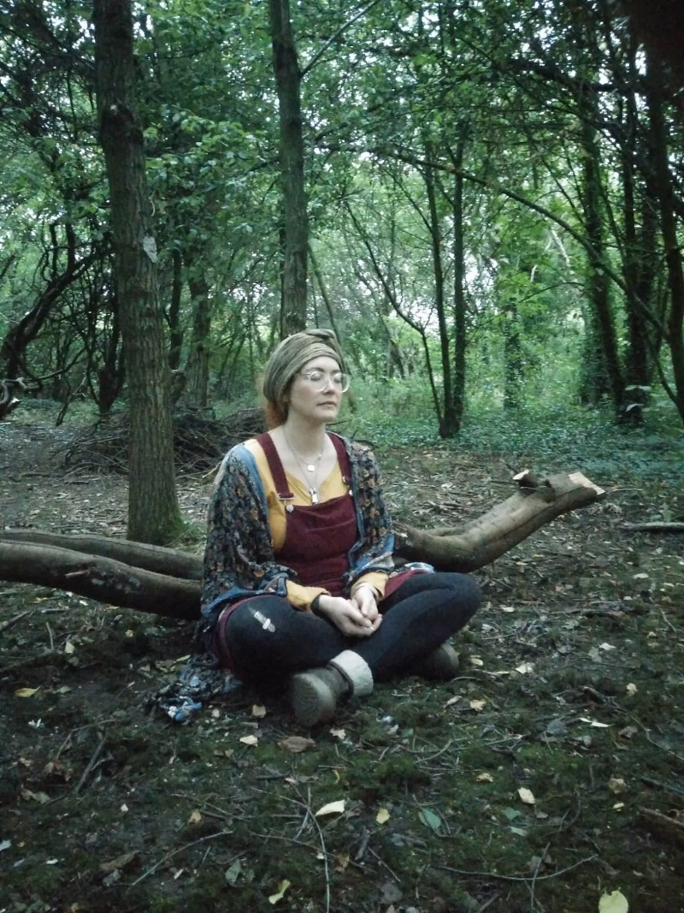
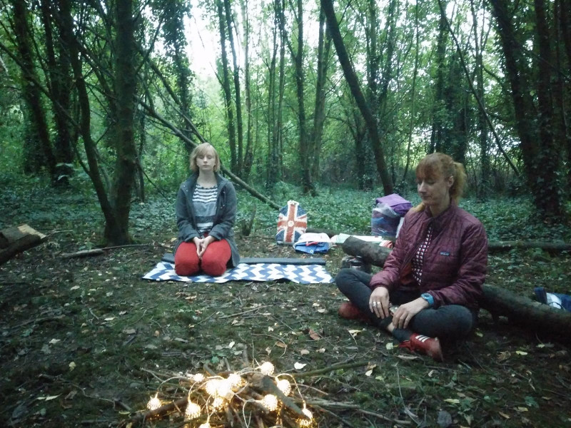
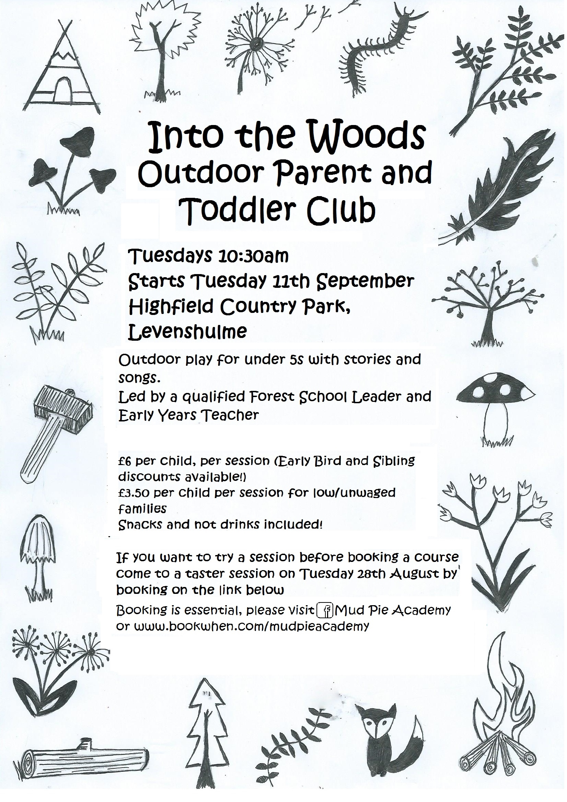
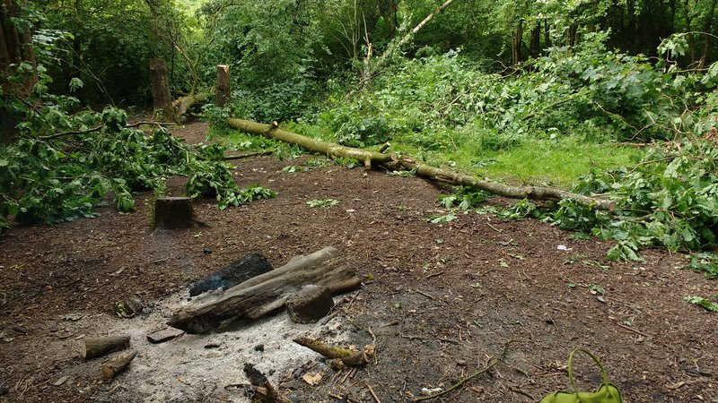
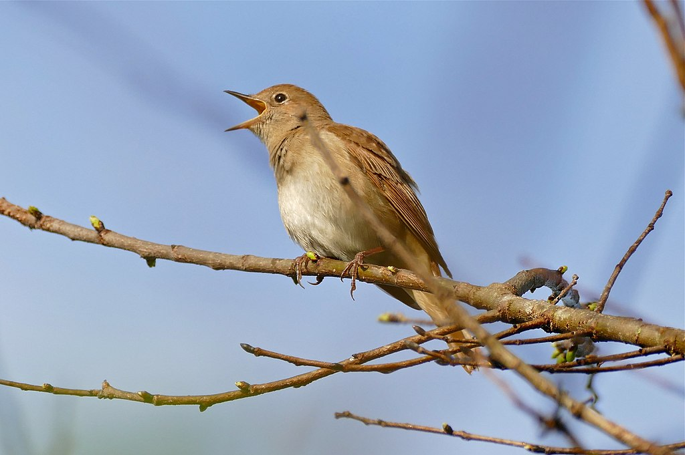
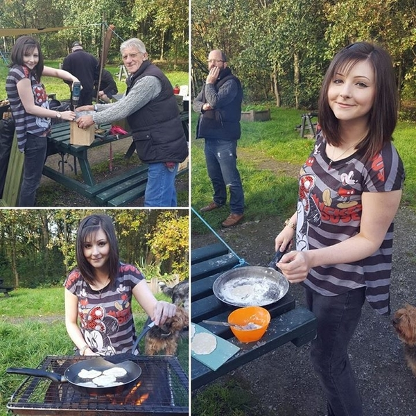
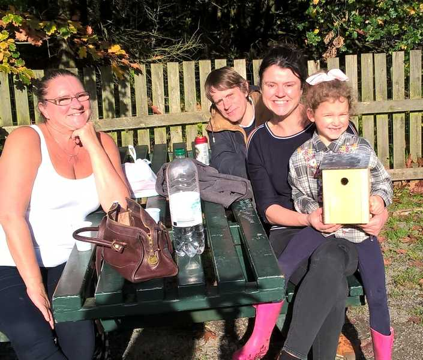

The new development on Cringle Road, for 57 houses, was rejected last year. Earlier in 2018 it was rejected on appeal by the planning inspectorate. However, it appears that the only outstanding objection is for the developers to contribute to the improvement of the park. The developers have notified the Friends group that they are preparing to submit another application. If you want to be notified when this application is actually submitted, so you can register your opinion on this development, you can fill out the form below.
Alex
Event
Night Time Mindfulness starting Thursday 6th December 2018
Discover the sounds and spirit of the park at night with evening Winter meditation. Beginners welcome, no experience needed!

Meet at the Bowler St entrance to the park 6th Dec 2018, 6.30pm-7.30pm
13th Dec 6.30pm-7.30pm
20th Dec 6.30pm-7.30pm Claire at claire@wildawakemindfulness.co.uk or 07990 974462
Event
Mindfulness in Nature Sessions - Starting Sept 4th
Wild Awake Mindfulness are running a series of mindfulness classes in the park by an accredited teacher. Beginners welcome, no experience needed.

Meet at the Bowler St entrance to the park 4th Sept 2018, 7pm-8pm
18th Sept 6.30pm-7.30pm
2nd Oct 6pm-7pm
16th Oct 5.30pm-6.30pm Claire at claire@wildawakemindfulness.co.uk or 07990 974462
News
Wild Awake Mindfulness Experience - Blog Post
On Monday 4th September 2018, a small group of us met at Bowler St entrance to the park do an hour of mindfulness with Claire from Wild Awake Mindfulness, and I was attending my first session of outdoor mindfulness in the park. We walked down the little path into the woods. After introducing ourselves, Claire did a couple of short sitting meditations. I noticed that meditating on breath was much easier than indoors alone, and more relaxing than group sessions indoors. The sounds from the park such as birdsong and wind in the trees, the feel of the wind on skin, and simply being in the open air made it much easier to focus on the moment. Even when there were distractions, such as laughter from the picnic areas and noisy crows crying harshly above, it didn't distract us. We also did some lying meditation, and saw a different side to the woods, watching squirrels and birds hopping about in the trees before closing our eyes. By the time we had finished, it was getting dark, and I felt good to have really felt the passage from day to night. There are some more sessions happening over the next few weeks, see the event below for details!


Alex
Event
Mindfulness in Nature Sessions - Starting Sept 4th
Wild Awake Mindfulness are running a series of mindfulness classes in the park by an accredited teacher. Beginners welcome, no experience needed.
Meet at the Bowler St entrance to the park 4th Sept 2018, 7pm-8pm
18th Sept 6.30pm-7.30pm
2nd Oct 6pm-7pm
16th Oct 5.30pm-6.30pm Claire at claire@wildawakemindfulness.co.uk or 07990 974462
Event
Art in the Park
Creative fun in the park for all ages. The Owl and the Coconut will be leading a session of mindfully creating art from objects you find in the park.
Every Thursday morning throughout the school holidays, The Conservation Volunteers, will be running free natural play sessions for 8-12 year olds at Highfield Country Park.
These fun outdoor sessions will allow children to explore their local park through activities like den building, bug hunting and natural crafts. To reserve a place or for more information please email manchester@tcv.org.uk or call 0161 962 9409. Places are on a first come first serve basis.
Into the Woods Toddlers Group - starting Sept 2018
Starting from Tue 11th Sept, a parent and toddler group Mud Pie Academy will be running on the park. Led by a qualified Forest School Leader and Early Years Teacher there will be stories and songs to entertain and educate. There will be a taster session on 28th August. Prices per session are £6 or £3.50 for low waged. Booking is essential - please book on the link below. Book at Bookwhen or Facebook

Higfield Country Park 10.30am Every Tues from 11th Septmudpieacademy @ gmail.com
News
Vandalism in the Forest School Area
At some point between Thursday 7th and Saturday the 9th June, vandals damaged the forest school area, where there is a clearing and log seats. The log seats were set fire to, and a number of trees were cut down, apparently for no reason, two oak trees and one birch was cut and the marks appear to be from hand saws, which would have been a lot of work! We were worried that this would affect the forest school activities that are run with children from St Marys. But the school children visited the site and still enjoyed themselves, so we are likely to leave it as is now, and the 5 x 2 hour sessions will be run as planned. The cut trees provide new things to climb on for the children, which offsets the loss of seats! Please note, it is dangerous to cut trees like this especially if you do not have a licence.

Alex
Event
Woodland Fun Day - Green Square
A relaxed day of woodland fun activities for adults and children. There will be mud involved so wear appropriate clothes! Activities include making a bird box, learning to maintain woodland, and planting woodland fruits. This is run by the Green Square Residents group and Sow the City. It will happen on the grass area next to the Bowler St entrance to the park.
Recently we have had a series of awful cold snaps, bringing snow and ice. However, this has not affecting the bird and pond life. Sightings over the last few months have included nightingales - although some people have challenged this claim, suggesting it could have been a black cap. There is now a heron that can be sometimes seen on the park. Bullfinches and goldfinches can be seen too. The success of the birds may be in part due to the diverse trees. Some trees such as the cypress due to the way they trap air, can be 6c-9c warmer than the air temperature. We have also seen freshwater shrimp in the ponds - a sign of healthy clean water.
Many thanks too for all who put out nuts and seeds on the park for the birds to keep them fed over the cold period. This made a massive difference!

The common nightingale Alex
Event
Volunteer Bulb Planting - Sat 24th Feb
Join us for a few hours work on the park! We are aiming to create places for flowerbeds at the entrances and under the lecterns, de-weed, tidy the borders and plant some bulbs.
In 2017 we held an event for the community to build bat boxes and to help children and adults alike connect to nature in the park. In a future session we will put up the bat boxes around the park and people will be able to see them around the park for years to come! The bats in the park are at risk and we are doing what we can to support them. See below for photos.


Alex
Event
Bowler St Community Clean Up - Sat 3rd Jan
The resident's association on Bowler St are having a community clean up day on the streets around Bowler St and Watts St. Litter pickers shall be provided. Bring gloves if you have some - some spares will be available.
The Green Square, Bowler St 10am Sat, 3rd Feb Emily 07825 261247
Event
Extraordinary General Meeting - Tue 9th Jan 2018
Our bi-monthly Friends meeting will happen at the baptist church opposite the Sidings pub. This meeting will include a vote on a new committee structure. This structure would mean more officers would be part overseeing decisions. All welcome.
Come and join us for a Christmassy walk around the park, get to know your neighbours and community, and then join us for a drink in the Sidings pub after.
The Friends of Highfield Country Park are bidding for funds to create a bee sanctuary in the park. Our idea is to create a Bee sanctuary garden in Highfield, one that all can enjoy and use as a walk through, and a place to sit and soak up the sun in the beautiful garden. A place where people can be educated and become closer to nature, but most of all for the bees of Manchester! As we all know, our bees need help, and it is vital that we help protect them. The aim is to have as many fruit trees, flowers, plants herbs and grasses that bees can flourish in, whilst creating an elegant space for families and other wildlife to enjoy. There would be a trail, which includes facts about bees, their different species, how they protect us and how we can help protect them. Read more and vote for us on the Aviva website!
Alex
News
Plans to Develop on Highfield Country Park Rejected
Plans were submitted by Towerhouse Systems to propose developing 57 houses on Cringle Road by Highfield Country Park. This would have covered the land where the Shores Fold Community Farm currently stands.
Reasons given for the council rejecting this development included:
Lack of access :- since it is assumed that each household may have two cars each, 114 cars may have to use Cringle Road for access. The roads were not considered big enough to cope with this.
Shores Fold Community Farm :- the farm is unique to this area, allowing families to visit and get tours of the animals. The loss of this farm would mean children would not get a chance to learn about animals.
Bat population :- bats have been confirmed to be living in Highfield Country Park and are a protected species. The loss of farmland would have an detrimental impact on their numbers. Now that this has been confirmed, we hope to do more work to support the bats.
Volunteers Peter and Steve put in a new bench by the pond just by Nelstrop Road. This Tolkien-esque pond looks wild enough to make you think you may find crocodiles inside! And now there is a place for you to relax here, with a new bench that is in place. The new bins have been put in by the picnic area by Bowler St, by St Andrews, and on the path along by Cringle Road.
Alex
Event
Family Event: Building Bat & Bird Boxes
Come to this family friendly event and help protect the wildlife of the park. The biodiversity of the park is growing, and it is great news we now have confirmed bat populations living there. This event is supported by the John Muir Trust and we are grateful to them for support. Read more about bats in the UK at the Bat Conservation Trust.
Highfield Country Park (meet at the picnic area by the Fallowfield Loop) 10am - 3pm Fri 27th October Alec - 0161 4832671
Event
Friends of Highfield Country Park Meeting
Bi-monthly meeting for anyone interested in helping support the park and the community. Please come along and get involved!
{kind=link}